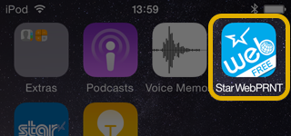
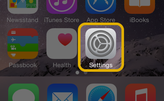
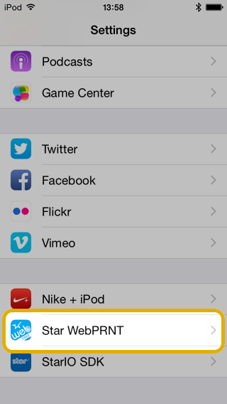
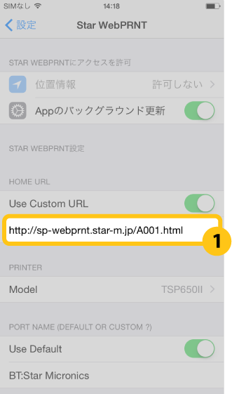
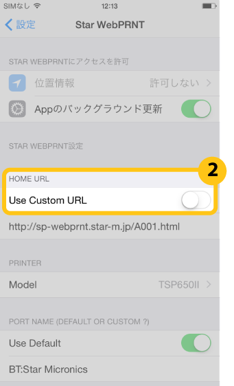
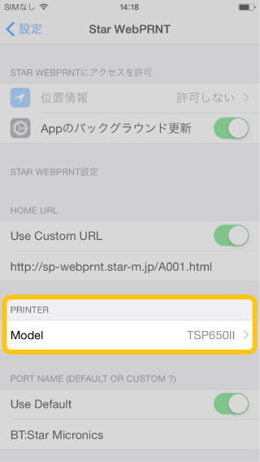
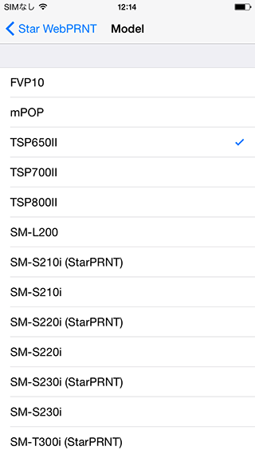
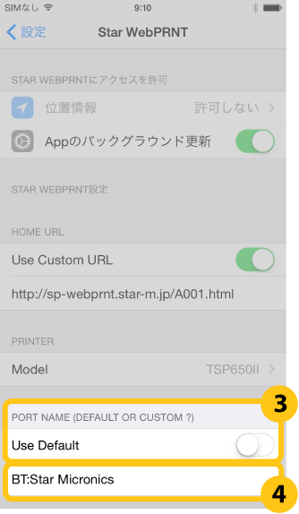
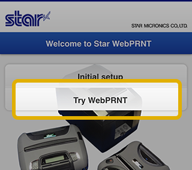

Star webPRNT User's Manual
使用方法 -Star webPRNT Browser -
- App Storeより「Star webPRNT Browser」をインストールします。
 - Star BluetoothプリンターとiOSデバイスをペアリングします。
- Settings > Star webPRNT を開きます。
 - HOME URLに、利用するWebサーバーのURLを設定します。
デフォルトでは弊社サンプルサイトが参照されています。利用するWebサーバーのURLを入力てください。(1)
弊社サンプルサイトを参照する場合は、Use Custom URLをOFFにします。(2)
 - PRINTERに、使用するプリンターモデルを設定します。
プリンター本体の設定を”StarPRNT”に変更した場合は、”（StarPRNT）”記載のプリンターモデルを選択してください。
 - PORT NAMEに、使用するプリンターポート名を設定します。
デフォルトでは”BT:Star Micronics”が設定されています。
変更する場合はUse DefaultをOFFにして(3)、ポート名("BT:<iOS Port Name>" または "BLE:<iOS Port Name>")を入力してください(4)。
Note:
SM-L200・SM-L300ではUse Defaultを使用できません。
Use DefaultをOFFにして、ポート名（デフォルトでは”BLE:STAR L200-XXXXX”*）を入力してください。
*XXXXXはS/Nの下5桁 - Star webPRNT Browserを開き、動作を確認します。
